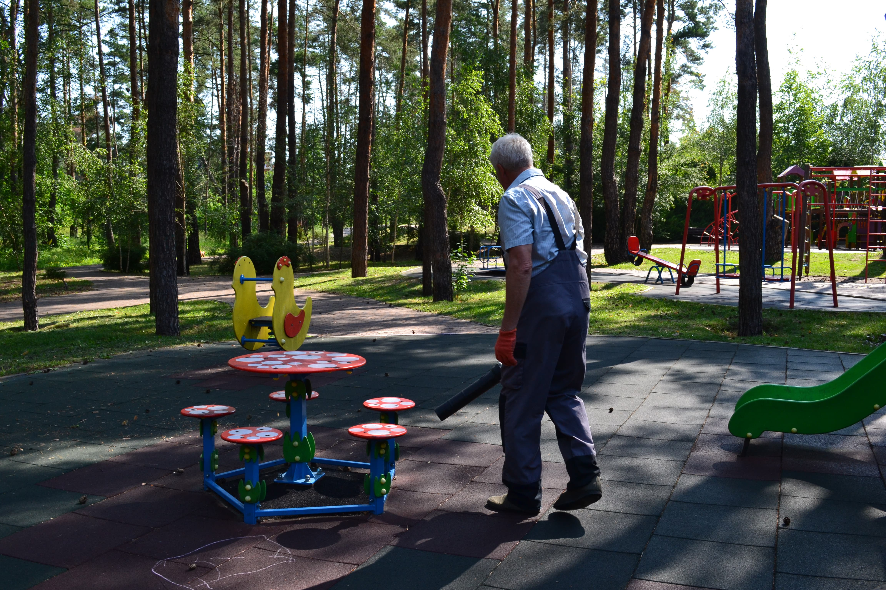
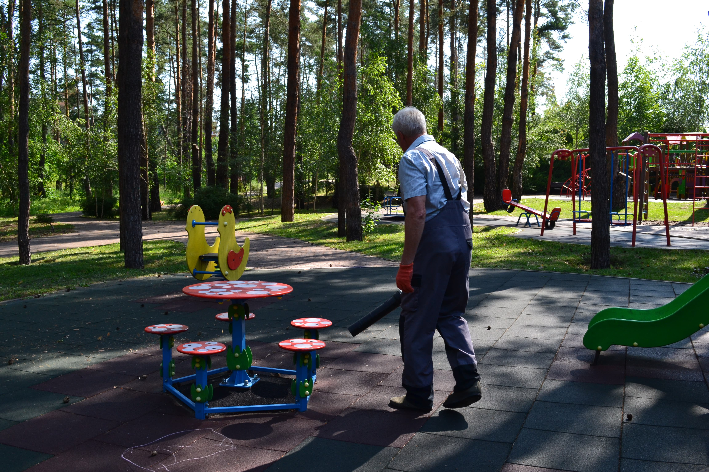
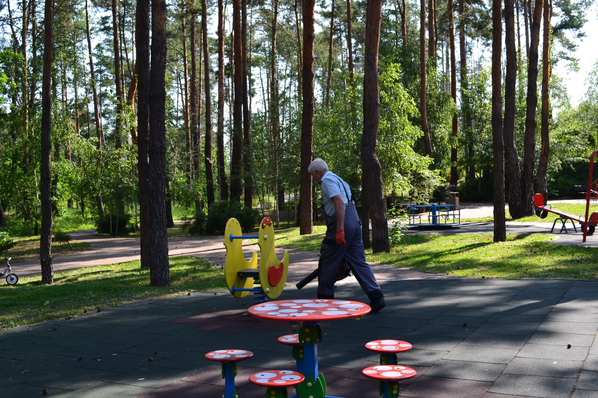
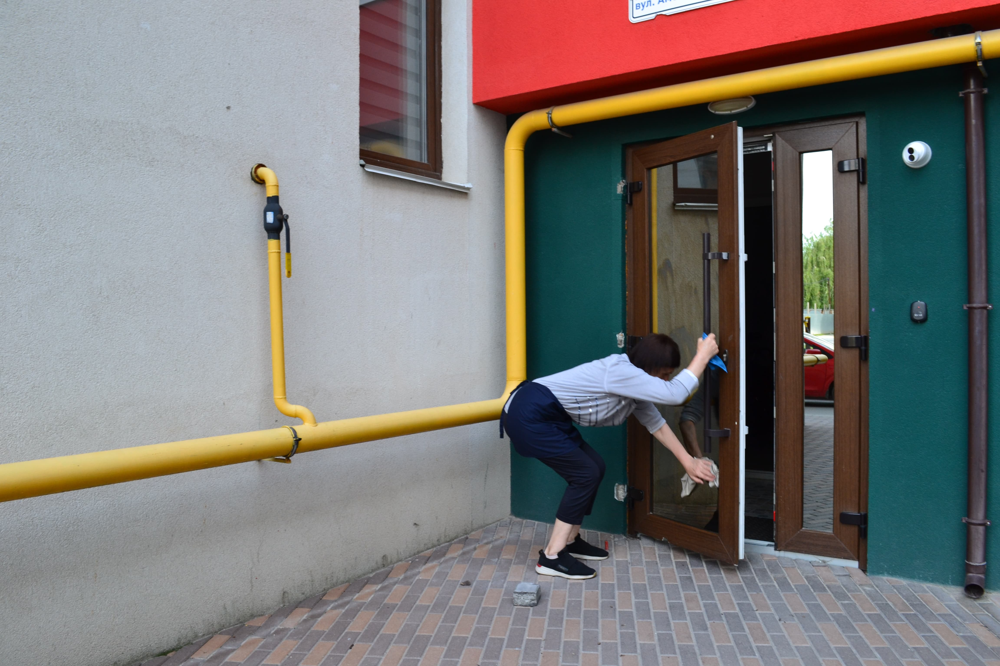
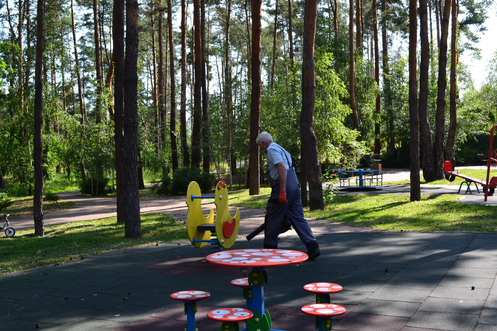
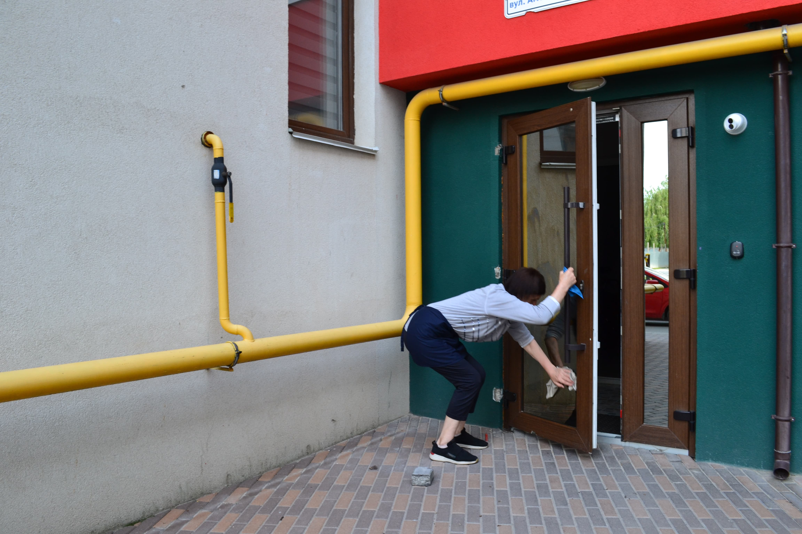
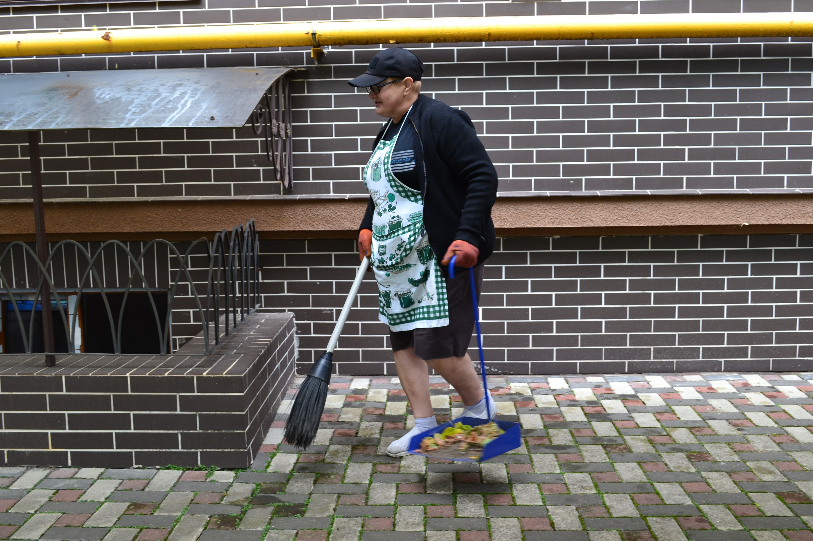
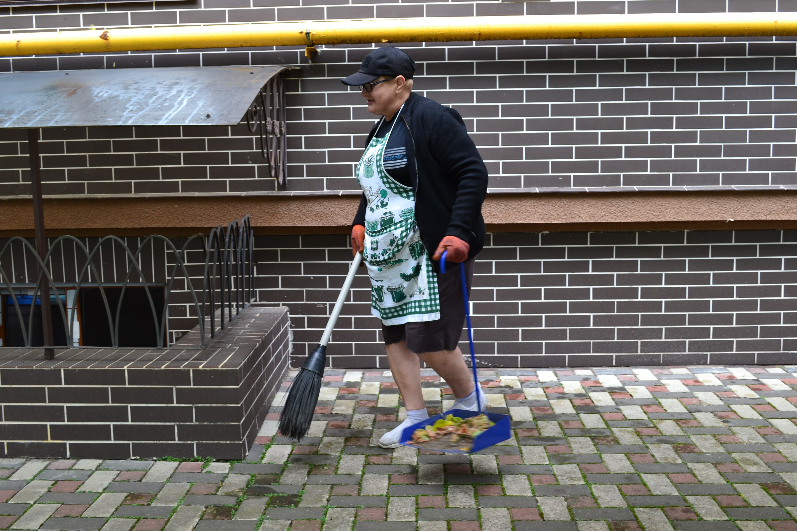

Клінінг
В "Укр Житло Сервіс" ми віддані створенню бездоганно чистого, комфортного та безпечного середовища у житлових і комерційних приміщеннях. Наша досвідчена команда застосовує сучасні засоби та методи для досягнення найвищих стандартів чистоти. Ми працюємо уважно, оперативно та з індивідуальним підходом до кожного об’єкта, щоб задовольнити потреби навіть найвибагливіших клієнтів.
1. Щоденне та генеральне прибирання
Комплексне очищення підлог, меблів, техніки, вікон і санвузлів у квартирах, офісах та під'їздах.
2. Глибоке очищення поверхонь
Видалення забруднень, пилу, бактерій зі складнодоступних місць — включно з плінтусами, вентиляціями та кутами.
3. Прибирання після ремонту
Професійне очищення приміщень від будівельного пилу, залишків фарби, клею, монтажних матеріалів.
4. Миття фасадів та вікон
Безпечна і якісна мийка склопакетів, вітрин, балконів і зовнішніх поверхонь за допомогою спеціальної техніки.
5. Дезінфекція приміщень
Обробка контактних поверхонь, ручок, кнопок, поручнів для забезпечення санітарного захисту.
6. Прибирання під’їздів та місць загального користування
Регулярне очищення сходових клітин, ліфтів, підвалів, технічних приміщень та сміттєвих камер.


 

 



 


×